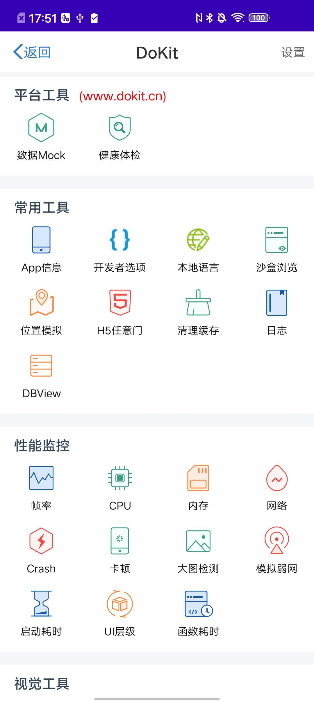
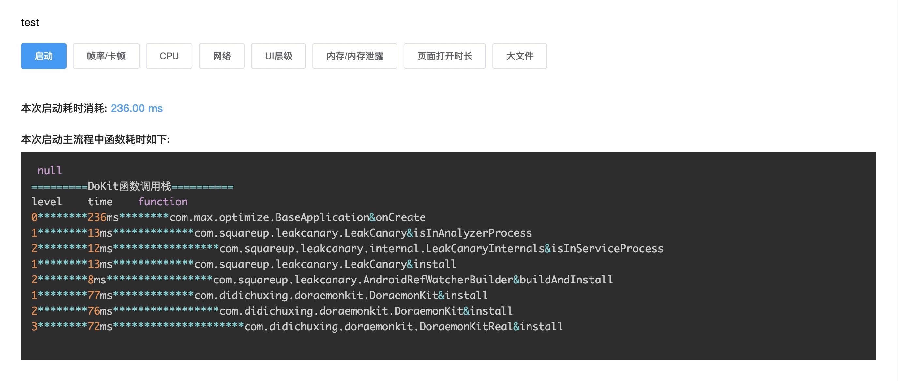

滴滴开源插件DoraemonKit使用说明,以及踩坑记录
什么是DoraemonKit
DoraemonKit，简称DoKit，中文名 哆啦A梦，意味着能够像哆啦A梦一样提供给他的主人各种各样的工具。Just Do Kit
集成出发点
集成Doraemon的出发点，主要是为了在解决在开发阶段就可以有效的检测App的性能指数,避免上线以后出现一个问题，比如内存泄漏、卡顿等等
集成的过程
其实这块DoraemonKit平台已经提供了相应的文档，主要帮大家少踩坑，以及正确的集成方式

上图所示就是集成完的效果，注意下面主要两步操作就可以实现上面的面板
在
app下面的build.gradle文件dependencies添加依赖1
2
3
4
5
6
7
8dependencies {
...
debugImplementation 'com.didichuxing.doraemonkit:doraemonkit:3.0.7.2' // 这是主要的依赖
releaseImplementation 'com.didichuxing.doraemonkit:doraemonkit-no-op:3.0.7.2' // 注意 这段可以注释掉，因为DoraemonKit本身就不建议集成在Release环境中，所以release下都是空实现
}然后在
Application的onCreate()方法中添加初始化代码1
2DoraemonKit.install(this); // 只需要这一行即可,这儿要注意，这个初始化要放在主线程，如果不放在主线程的话，当使用健康检测的时候，重启之后不会使用不了
//DoraemonKit.install(this,ProductId); //主要他的重载方法中传入的ProductId是在平台创建应用生成的，这个id主要跟接口Mock 和 健康检测有关，如果不需要这两个功能可以不用传入这个ProductId完成以上两步就可以使用
常用工具、性能监控、视觉工具这些基本功能了，这有几点需要注意如果完成以上两步，出现了悬浮按钮，但是点开没内容，有可能是debug模式下开启了
混淆，注意把混淆关掉，或者加入混淆文件规则
-keep class com.didichuxing.doraemonkit.{*;}
-keep interface com.didichuxing.doraemonkit.{*;}
然后从新build，把app卸载，再重新编译运行如果想使用
平台工具中的数据Mock和健康检测在Project目录下的
build.gradle文件下1
2
3
4
5dependencies {
classpath "com.android.tools.build:gradle:3.5.3"
classpath 'com.didichuxing.doraemonkit:doraemonkit-plugin:3.0.7.2' // 添加这行插件
}然后在app目录下
build.gradle文件下1
2
3
4
5
6
7
8
9
10
11
12
13
14
15
16
17
18
19
20
21
22
23
24
25
26
27
28
29
30
31
32
33
34
35
36
37
38
39
40
41
42
43
44apply plugin: 'com.didi.dokit'
android{
...
}
//dokit 扩展
dokitExt {
//dokit 插件开关
dokitPluginSwitch true
//通用设置
comm {
//地图经纬度开关
gpsSwitch true
//网络开关
networkSwitch true
//大图开关
bigImgSwitch true
}
// slowMethod {
// //0:默认模式 打印函数调用栈 需添加指定入口 默认为application onCreate 和attachBaseContext
// //1:普通模式 运行时打印某个函数的耗时 全局业务代码函数插入 已弃用
// strategy 1
// //函数功能开关 已弃用
// methodSwitch false
//
// //调用栈模式配置
// stackMethod {
// //默认值为 5ms 小于该值的函数在调用栈中不显示
// thresholdTime 5
// //调用栈函数入口
// enterMethods = ["com.wxkj.relx.relx.app.BaseApplication.onCreate"]
// }
// //普通模式配置
// normalMethod {
// //默认值为 500ms 小于该值的函数在运行时不会在控制台中被打印
// thresholdTime 100
// //需要针对函数插装的包名
// packageNames = ["com.wxkj.relx.relx"]
// //不需要针对函数插装的包名&类名
// methodBlacklist = ["com.wxkj.relx.relx.util"]
// }
// }
}当然上面你可以专门创建一个
doraemonKit.gradle文件，把上面的内容圈放在里面，更加好管理在
gradle.properties下添加1
2
3
4
5
6
7
8#dokit全局配置
#dokit 慢函数开关
DOKIT_METHOD_SWITCH=true
#dokit 函数调用栈层级
DOKIT_METHOD_STACK_LEVEL=4
#0:默认模式 打印函数调用栈 需添加指定入口 默认为application onCreate 和attachBaseContext
#1:普通模式 运行时打印某个函数的耗时 全局业务代码函数插入
DOKIT_METHOD_STRATEGY=0完成上述就可以在平台使
用数据mock和健康检测

可以开心的玩耍了